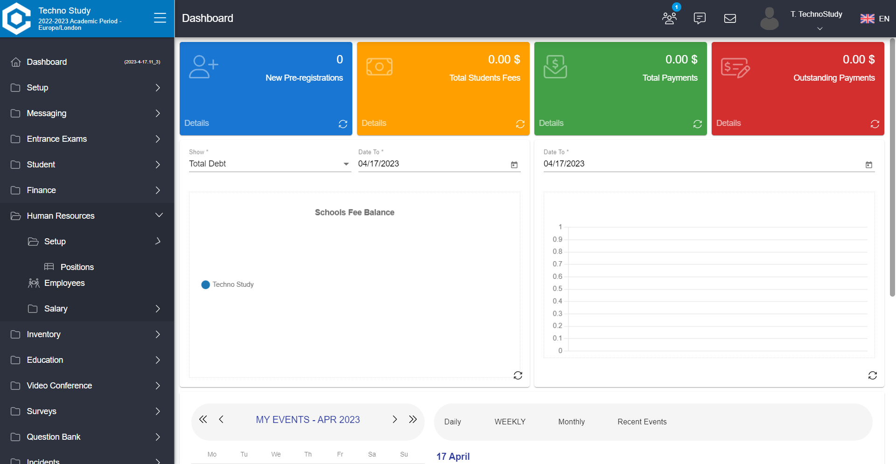
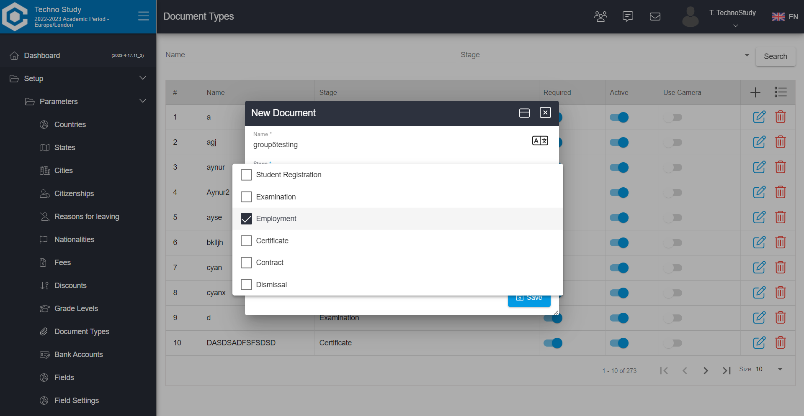
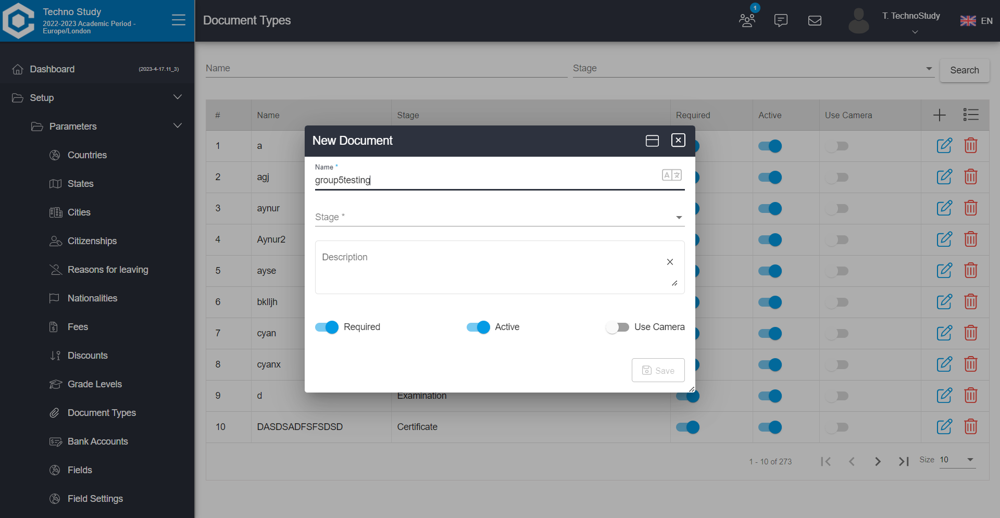

-
As an Admin User I should be able to Add-Edit-Delete Position Categories Under Human Resources Setup
8:04:48 PM / 00:01:38:875 Pass
As an Admin User I should be able to Add-Edit-Delete Position Categories Under Human Resources Setup
04.17.2023 8:04:48 PM 04.17.2023 8:06:27 PM 00:01:38:875 · #test-id=1Pass(SP-1-TC-01) Check Add new position category - Positive ScenarioGiven I log in as an AdminWhen Click on the element in LeftNavhumanResources setupInHumanR positionCategories And Click on the element in DialogaddButton And User sending the keys in Dialog ContentnameInput Quality Assurance And Click on the element in DialogsaveButton Then Verify contains textsuccessMessage successfully Then Display required elementsearchBox Pass(SP-1-TC-02) Check Add new position category with same data - Negative ScenarioGiven I log in as an AdminWhen Click on the element in LeftNavhumanResources setupInHumanR positionCategories And Click on the element in DialogaddButton And User sending the keys in Dialog ContentnameInput Quality Assurance And Click on the element in DialogsaveButton Then Verify contains textalreadyExists already exists Pass(SP-1-TC-03) Check Edit the position category - Positive ScenarioGiven I log in as an AdminWhen Click on the element in LeftNavhumanResources setupInHumanR positionCategories And User sending the keys in Dialog ContentsearchName Quality Assurance And Click on the element in DialogsearchButton editButton And User sending the keys in Dialog ContentnameInput Quality And Click on the element in DialogsaveButton Then Verify contains textsuccessMessage successfully Pass(SP-1-TC-04) Check Delete the position category - Positive ScenarioGiven I log in as an AdminWhen Click on the element in LeftNavhumanResources setupInHumanR positionCategories And User delete item from Dialog ContentQuality Then Verify contains textsuccessMessage successfully Pass(SP-1-TC-05) Check Delete the position category already deleted - Negative ScenarioGiven I log in as an AdminWhen Click on the element in LeftNavhumanResources setupInHumanR positionCategories And User sending the keys in Dialog ContentsearchName Quality And Click on the element in DialogsearchButton Then Verify contains textverifyDelete no data to display -
As an Admin User I should be able to Add-Edit-Delete Attestations Under Human Resources Setup
8:06:27 PM / 00:01:19:401 Fail
As an Admin User I should be able to Add-Edit-Delete Attestations Under Human Resources Setup
04.17.2023 8:06:27 PM 04.17.2023 8:07:47 PM 00:01:19:401 · #test-id=41Fail(SP-2-TC-01) Check Add new Attestations - Positive ScenarioGiven I log in as an AdminWhen Click on the element in LeftNavhumanResources setupInHumanR Attestations And Click on the element in DialogaddButton Step skippedAnd User sending the keys in Dialog ContentnameInput Sdet Man Step skippedAnd Click on the element in DialogsaveButton Step skippedThen Verify contains textsuccessMessage successfully Step skippedThen Display required elementsearchBox Step skippedStepDefinitions.Hooks.after(io.cucumber.java.Scenario)screenshot nameFail(SP-2-TC-02) Check Add new Attestations with same data - Negative ScenarioGiven I log in as an AdminWhen Click on the element in LeftNavhumanResources setupInHumanR Attestations And Click on the element in DialogaddButton Step skippedAnd User sending the keys in Dialog ContentnameInput Sdet Man Step skippedAnd Click on the element in DialogsaveButton Step skippedThen Verify contains textalreadyExists already exists Step skippedStepDefinitions.Hooks.after(io.cucumber.java.Scenario)screenshot nameFail(SP-2-TC-03) Check Edit the Attestations - Positive ScenarioGiven I log in as an AdminWhen Click on the element in LeftNavhumanResources setupInHumanR Attestations And User sending the keys in Dialog ContentsearchName Sdet Man Step skippedAnd Click on the element in DialogsearchButton editButton Step skippedAnd User sending the keys in Dialog ContentnameInput Sdet Step skippedAnd Click on the element in DialogsaveButton Step skippedThen Verify contains textsuccessMessage successfully Step skippedStepDefinitions.Hooks.after(io.cucumber.java.Scenario)screenshot nameFail(SP-2-TC-04) Check Delete the Attestations - Positive ScenarioGiven I log in as an AdminWhen Click on the element in LeftNavhumanResources setupInHumanR Attestations And User delete item from Dialog ContentSdet Step skippedThen Verify contains textsuccessMessage successfully Step skippedStepDefinitions.Hooks.after(io.cucumber.java.Scenario)screenshot name Fail(SP-2-TC-05) Check Delete the Attestations already deleted - Negative ScenarioGiven I log in as an AdminWhen Click on the element in LeftNav
Fail(SP-2-TC-05) Check Delete the Attestations already deleted - Negative ScenarioGiven I log in as an AdminWhen Click on the element in LeftNavhumanResources setupInHumanR Attestations And User sending the keys in Dialog ContentsearchName Sdet Step skippedAnd Click on the element in DialogsearchButton Step skippedThen Verify contains textverifyDelete no data to display Step skippedStepDefinitions.Hooks.after(io.cucumber.java.Scenario)screenshot name -
As an Admin User I should be able to Add-Edit-Delete Documents under Parameters Setup
8:07:47 PM / 00:01:20:636 Fail
As an Admin User I should be able to Add-Edit-Delete Documents under Parameters Setup
04.17.2023 8:07:47 PM 04.17.2023 8:09:07 PM 00:01:20:636 · #test-id=81Fail(SP-3-TC-01) Check Add new document - Positive ScenarioGiven I log in as an AdminWhen Click on the element in LeftNavsetup parameters documentTypes And Click on the element in DialogaddButton And User sending the keys in Dialog ContentnameInput group5testing And Click on the element in DialogselectStageNewDoc employment And Click on the element in DialogsaveButton Then Verify contains textsuccessMessage successfully Step skippedStepDefinitions.Hooks.after(io.cucumber.java.Scenario)screenshot nameFail(SP-3-TC-02) Check Add new document with same data - Negative ScenarioGiven I log in as an AdminWhen Click on the element in LeftNavsetup parameters documentTypes And Click on the element in DialogaddButton And User sending the keys in Dialog ContentnameInput group5testing And Click on the element in DialogselectStageEditDoc employment And Click on the element in DialogsaveButton Step skippedThen Verify contains textalreadyExists already exists Step skippedStepDefinitions.Hooks.after(io.cucumber.java.Scenario)screenshot namePass(SP-3-TC-03) Check Edit the document - Positive ScenarioGiven I log in as an AdminWhen Click on the element in LeftNavsetup parameters documentTypes And User sending the keys in Dialog ContentsearchName group5testing And Click on the element in DialogselectStageEditDoc employment And Click on the element in DialogsearchButton editButton And User sending the keys in Dialog ContentnameInput group5test And Click on the element in DialogsaveButton Then Verify contains textsuccessMessage successfully Fail(SP-3-TC-04) Check Delete the field - Positive ScenarioGiven I log in as an AdminWhen Click on the element in LeftNavsetup parameters documentTypes And User sending the keys in Dialog ContentsearchName group5test searchCode 12345 And Click on the element in DialogsearchButton deleteButton deleteDialogBtn Step skippedThen Verify contains textsuccessMessage successfully Step skippedStepDefinitions.Hooks.after(io.cucumber.java.Scenario)Fail(SP-3-TC-05) Check Delete the field already deleted - Negative ScenarioGiven I log in as an AdminWhen Click on the element in LeftNavsetup parameters documentTypes Step skippedAnd User sending the keys in Dialog ContentsearchName group5test searchCode 12345 Step skippedAnd Click on the element in DialogsearchButton Step skippedThen Verify contains textverifyDelete no data to display Step skippedStepDefinitions.Hooks.after(io.cucumber.java.Scenario) -
As an Admin User I should be able to Add-Edit-Delete Fields under Parameters Setup
8:09:07 PM / 00:00:00:312 Fail
As an Admin User I should be able to Add-Edit-Delete Fields under Parameters Setup
04.17.2023 8:09:07 PM 04.17.2023 8:09:08 PM 00:00:00:312 · #test-id=124Fail(SP-4-TC-01) Check Add new field - Positive ScenarioGiven I log in as an AdminWhen Click on the element in LeftNavsetup parameters fields Step skippedAnd Click on the element in DialogaddButton Step skippedAnd User sending the keys in Dialog ContentnameInput group5testing codeInput 12345 Step skippedAnd Click on the element in Dialogselectarrow logical Step skippedAnd Click on the element in DialogsaveButton Step skippedThen Verify contains textsuccessMessage successfully Step skippedStepDefinitions.Hooks.after(io.cucumber.java.Scenario)Fail(SP-4-TC-02) Check Add new field with same data - Negative ScenarioGiven I log in as an AdminWhen Click on the element in LeftNavsetup parameters fields Step skippedAnd Click on the element in DialogaddButton Step skippedAnd User sending the keys in Dialog ContentnameInput group5testing codeInput 12345 Step skippedAnd Click on the element in Dialogselectarrow logical Step skippedAnd Click on the element in DialogsaveButton Step skippedThen Verify contains textalreadyExists already exists Step skippedStepDefinitions.Hooks.after(io.cucumber.java.Scenario)Fail(SP-4-TC-03) Check Edit the field - Positive ScenarioGiven I log in as an AdminWhen Click on the element in LeftNavsetup parameters fields Step skippedAnd User sending the keys in Dialog ContentsearchName group5testing searchCode 12345 Step skippedAnd Click on the element in DialogsearchButton editButton Step skippedAnd User sending the keys in Dialog ContentnameInput group5test Step skippedAnd Click on the element in DialogsaveButton Step skippedThen Verify contains textsuccessMessage successfully Step skippedStepDefinitions.Hooks.after(io.cucumber.java.Scenario)Fail(SP-4-TC-04) Check Delete the field - Positive ScenarioGiven I log in as an AdminWhen Click on the element in LeftNavsetup parameters fields Step skippedAnd User sending the keys in Dialog ContentsearchName group5test searchCode 12345 Step skippedAnd Click on the element in DialogsearchButton deleteButton deleteDialogBtn Step skippedThen Verify contains textsuccessMessage successfully Step skippedStepDefinitions.Hooks.after(io.cucumber.java.Scenario)Fail(SP-4-TC-05) Check Delete the field already deleted - Negative ScenarioGiven I log in as an AdminWhen Click on the element in LeftNavsetup parameters fields Step skippedAnd User sending the keys in Dialog ContentsearchName group5test searchCode 12345 Step skippedAnd Click on the element in DialogsearchButton Step skippedThen Verify contains textverifyDelete no data to display Step skippedStepDefinitions.Hooks.after(io.cucumber.java.Scenario)Fail(SP-8-TC-01) Check Add new field - Positive ScenarioGiven I log in as an AdminWhen Click on the element in LeftNavsetup schoolSetup departments Step skippedAnd Click on the element in DialogaddButton Step skippedAnd User sending the keys in Dialog ContentnameInput group5testing codeInput 12345 Step skippedAnd Click on the element in Dialogselectarrow logical Step skippedAnd Click on the element in DialogsaveButton Step skippedThen Verify contains textsuccessMessage successfully Step skippedStepDefinitions.Hooks.after(io.cucumber.java.Scenario)Fail(SP-8-TC-02) Check Add new field with same data - Negative ScenarioGiven I log in as an AdminWhen Click on the element in LeftNavsetup schoolSetup departments Step skippedAnd Click on the element in DialogaddButton Step skippedAnd User sending the keys in Dialog ContentnameInput group5testing codeInput 12345 Step skippedAnd Click on the element in Dialogselectarrow logical Step skippedAnd Click on the element in DialogsaveButton Step skippedThen Verify contains textalreadyExists already exists Step skippedStepDefinitions.Hooks.after(io.cucumber.java.Scenario)Fail(SP-8-TC-03) Check Edit the field - Positive ScenarioGiven I log in as an AdminWhen Click on the element in LeftNavsetup schoolSetup departments Step skippedAnd User sending the keys in Dialog ContentsearchName group5testing searchCode 12345 Step skippedAnd Click on the element in DialogsearchButton editButton Step skippedAnd User sending the keys in Dialog ContentnameInput group5test Step skippedAnd Click on the element in DialogsaveButton Step skippedThen Verify contains textsuccessMessage successfully Step skippedStepDefinitions.Hooks.after(io.cucumber.java.Scenario)Fail(SP-8-TC-04) Check Delete the field - Positive ScenarioGiven I log in as an AdminWhen Click on the element in LeftNavsetup schoolSetup departments Step skippedAnd User sending the keys in Dialog ContentsearchName group5test searchCode 12345 Step skippedAnd Click on the element in DialogsearchButton deleteButton deleteDialogBtn Step skippedThen Verify contains textsuccessMessage successfully Step skippedStepDefinitions.Hooks.after(io.cucumber.java.Scenario)Fail(SP-8-TC-05) Check Delete the field already deleted - Negative ScenarioGiven I log in as an AdminWhen Click on the element in LeftNavsetup schoolSetup departments Step skippedAnd User sending the keys in Dialog ContentsearchName group5test searchCode 12345 Step skippedAnd Click on the element in DialogsearchButton Step skippedThen Verify contains textverifyDelete no data to display Step skippedStepDefinitions.Hooks.after(io.cucumber.java.Scenario) -
Admin User should be able to Add Positions under Resources Setup
8:09:07 PM / 00:00:00:094 Fail
Admin User should be able to Add Positions under Resources Setup
04.17.2023 8:09:07 PM 04.17.2023 8:09:07 PM 00:00:00:094 · #test-id=166Fail(SP-5-TC-01) Admin should be already in the Setup under Human Resources Functionality - Positive ScenarioGiven I log in as an AdminWhen Click on the element in LeftNavhumanResources setupInHumanR positionsInHumanR Step skippedAnd Click on the element in DialogaddButton Step skippedAnd User sending the keys in Dialog ContentnameInput Kito Mamaseverrr Step skippedAnd User sending the keys in Dialog ContentshortName kitoş Step skippedAnd Click on the element in DialogsaveButton Step skippedThen Verify contains textsuccessMessage successfully Step skippedStepDefinitions.Hooks.after(io.cucumber.java.Scenario)Fail(SP-5-TC-02) Admin should have already created a new positions - Negative ScenarioGiven I log in as an AdminWhen Click on the element in LeftNavhumanResources setupInHumanR positionsInHumanR Step skippedAnd Click on the element in DialogaddButton Step skippedAnd User sending the keys in Dialog ContentnameInput Kito Mamaseverrr Step skippedAnd User sending the keys in Dialog ContentshortName kitoş Step skippedAnd Click on the element in DialogsaveButton Step skippedThen Verify contains textalreadyExists already exists Step skippedStepDefinitions.Hooks.after(io.cucumber.java.Scenario)Fail(SP-5-TC-03) Admin should have already created a new positionsGiven I log in as an AdminWhen Click on the element in LeftNavhumanResources setupInHumanR positionsInHumanR Step skippedAnd User sending the keys in Dialog ContentsearchNameInHumanR Kito Mamaseverrr searchShortNameInHumanR kitoş Step skippedAnd Click on the element in DialogsearchButton Step skippedAnd Click on the element in DialogeditButton Step skippedAnd User sending the keys in Dialog ContentsearchNameInHumanR Kito Mamasever Step skippedAnd Click on the element in DialogsaveButton Step skippedThen Verify contains textsuccessMessage successfully Step skippedStepDefinitions.Hooks.after(io.cucumber.java.Scenario)Fail(SP-5-TC-04)Admin User should be able to Delete Positions under Resources SetupGiven I log in as an AdminWhen Click on the element in LeftNavhumanResources setupInHumanR positionsInHumanR Step skippedAnd User sending the keys in Dialog ContentsearchNameInHumanR Kito Mamasever searchShortNameInHumanR kitoş Step skippedAnd Click on the element in DialogsearchButton Step skippedAnd Click on the element in DialogdeleteButton Step skippedAnd Click on the element in DialogdeleteDialogBtn Step skippedThen Verify contains textsuccessMessage successfully Step skippedStepDefinitions.Hooks.after(io.cucumber.java.Scenario)Fail(SP-5-TC-05) Admin User should not be able to access deleted Positions under Resources SetupGiven I log in as an AdminWhen Click on the element in LeftNavhumanResources setupInHumanR positionsInHumanR Step skippedAnd User sending the keys in Dialog ContentsearchNameInHumanR Kito Mamasever searchShortNameInHumanR kitoş Step skippedAnd Click on the element in DialogsearchButton Step skippedThen Verify contains textverifyDelete no data to display Step skippedStepDefinitions.Hooks.after(io.cucumber.java.Scenario) -
As an Admin User I should be able to Add-Edit-Delete School Locations under School Setup
8:09:07 PM / 00:00:00:008 Fail
As an Admin User I should be able to Add-Edit-Delete School Locations under School Setup
04.17.2023 8:09:07 PM 04.17.2023 8:09:07 PM 00:00:00:008 · #test-id=211Fail(SP-7-TC-01) Check Add new location - Positive ScenarioGiven I log in as an AdminWhen Click on the element in LeftNavsetup schoolSetup locations Step skippedAnd Click on the element in DialogaddButton Step skippedAnd User sending the keys in Dialog ContentnameInput name1 codeInput shortname capacity 2000 Step skippedStepDefinitions.Hooks.after(io.cucumber.java.Scenario) -
As an Admin User I should be able to Add-Edit-Delete Bank Account Under Setup-Parameters
8:09:08 PM / 00:00:00:068 Fail
As an Admin User I should be able to Add-Edit-Delete Bank Account Under Setup-Parameters
04.17.2023 8:09:08 PM 04.17.2023 8:09:08 PM 00:00:00:068 · #test-id=259Fail(SP-9-TC-01) Check Add new bank account - Positive ScenarioGiven I log in as an AdminWhen Click on the element in LeftNavsetup parameters bankAccount Step skippedAnd Click on the element in DialogaddButton Step skippedAnd User sending the keys in Dialog ContentnameInput Grup5 iban TR11 1111 1111 1111 1111 1111 11 integrationCode 123456 Step skippedAnd Click on the element in Dialogcurrency tryInCurrency saveButton Step skippedThen Verify contains textsuccessMessage successfully Step skippedThen Display required elementsearchBox Step skippedStepDefinitions.Hooks.after(io.cucumber.java.Scenario)Fail(SP-9-TC-02) Check Add new bank account with same data - Negative ScenarioGiven I log in as an AdminWhen Click on the element in LeftNavsetup parameters bankAccount Step skippedAnd Click on the element in DialogaddButton Step skippedAnd User sending the keys in Dialog ContentnameInput Grup5 iban TR11 1111 1111 1111 1111 1111 11 integrationCode 123456 Step skippedAnd Click on the element in Dialogcurrency tryInCurrency saveButton Step skippedThen Verify contains textalreadyExists already exists Step skippedStepDefinitions.Hooks.after(io.cucumber.java.Scenario)Fail(SP-9-TC-03) Check Edit the bank account - Positive ScenarioGiven I log in as an AdminWhen Click on the element in LeftNavsetup parameters bankAccount Step skippedAnd User sending the keys in Dialog ContentsearchName Grup5 Step skippedAnd Click on the element in DialogsearchButton editButton Step skippedAnd User sending the keys in Dialog ContentnameInput Grup5 New Account iban TR11 1111 1111 1111 1111 1111 00 integrationCode 654321 Step skippedAnd Click on the element in Dialogcurrency usdInCurrency saveButton Step skippedThen Verify contains textsuccessMessage successfully Step skippedStepDefinitions.Hooks.after(io.cucumber.java.Scenario)Fail(SP-9-TC-04) Check Delete the position category - Positive ScenarioGiven I log in as an AdminWhen Click on the element in LeftNavsetup parameters bankAccount Step skippedAnd User delete item from Dialog ContentGrup5 New Account Step skippedThen Verify contains textsuccessMessage successfully Step skippedStepDefinitions.Hooks.after(io.cucumber.java.Scenario)Fail(SP-9-TC-05) Check Delete the position category already deleted - Negative ScenarioGiven I log in as an AdminWhen Click on the element in LeftNavsetup parameters bankAccount Step skippedAnd User sending the keys in Dialog ContentsearchName Grup5 New Account Step skippedAnd Click on the element in DialogsearchButton Step skippedThen Verify contains textverifyDelete no data to display Step skippedStepDefinitions.Hooks.after(io.cucumber.java.Scenario)
-
java.lang.NullPointerException
5 tests
java.lang.NullPointerException
5 failedStatus Timestamp TestName Fail 20:06:33 PM When Click on the element in LeftNav As an Admin User I should be able to Add-Edit-Delete Attestations Under Human Resources Setup.(SP-2-TC-01) Check Add new Attestations - Positive Scenario.When Click on the element in LeftNavFail 20:06:50 PM When Click on the element in LeftNav As an Admin User I should be able to Add-Edit-Delete Attestations Under Human Resources Setup.(SP-2-TC-02) Check Add new Attestations with same data - Negative Scenario.When Click on the element in LeftNavFail 20:07:06 PM When Click on the element in LeftNav As an Admin User I should be able to Add-Edit-Delete Attestations Under Human Resources Setup.(SP-2-TC-03) Check Edit the Attestations - Positive Scenario.When Click on the element in LeftNavFail 20:07:22 PM When Click on the element in LeftNav As an Admin User I should be able to Add-Edit-Delete Attestations Under Human Resources Setup.(SP-2-TC-04) Check Delete the Attestations - Positive Scenario.When Click on the element in LeftNavFail 20:07:37 PM When Click on the element in LeftNav As an Admin User I should be able to Add-Edit-Delete Attestations Under Human Resources Setup.(SP-2-TC-05) Check Delete the Attestations already deleted - Negative Scenario.When Click on the element in LeftNav -
org.openqa.selenium.NoSuchWindowException
46 tests
org.openqa.selenium.NoSuchWindowException
46 failedStatus Timestamp TestName Fail 20:08:56 PM And User sending the keys in Dialog Content As an Admin User I should be able to Add-Edit-Delete Documents under Parameters Setup.(SP-3-TC-04) Check Delete the field - Positive Scenario.And User sending the keys in Dialog ContentFail 20:09:07 PM StepDefinitions.Hooks.after(io.cucumber.java.Scenario) As an Admin User I should be able to Add-Edit-Delete Documents under Parameters Setup.(SP-3-TC-04) Check Delete the field - Positive Scenario.StepDefinitions.Hooks.after(io.cucumber.java.Scenario)Fail 20:09:07 PM Given I log in as an Admin As an Admin User I should be able to Add-Edit-Delete Documents under Parameters Setup.(SP-3-TC-05) Check Delete the field already deleted - Negative Scenario.Given I log in as an AdminFail 20:09:07 PM StepDefinitions.Hooks.after(io.cucumber.java.Scenario) As an Admin User I should be able to Add-Edit-Delete Documents under Parameters Setup.(SP-3-TC-05) Check Delete the field already deleted - Negative Scenario.StepDefinitions.Hooks.after(io.cucumber.java.Scenario)Fail 20:09:07 PM Given I log in as an Admin As an Admin User I should be able to Add-Edit-Delete Fields under Parameters Setup.(SP-4-TC-01) Check Add new field - Positive Scenario.Given I log in as an AdminFail 20:09:07 PM StepDefinitions.Hooks.after(io.cucumber.java.Scenario) As an Admin User I should be able to Add-Edit-Delete Fields under Parameters Setup.(SP-4-TC-01) Check Add new field - Positive Scenario.StepDefinitions.Hooks.after(io.cucumber.java.Scenario)Fail 20:09:07 PM Given I log in as an Admin As an Admin User I should be able to Add-Edit-Delete Fields under Parameters Setup.(SP-4-TC-02) Check Add new field with same data - Negative Scenario.Given I log in as an AdminFail 20:09:07 PM StepDefinitions.Hooks.after(io.cucumber.java.Scenario) As an Admin User I should be able to Add-Edit-Delete Fields under Parameters Setup.(SP-4-TC-02) Check Add new field with same data - Negative Scenario.StepDefinitions.Hooks.after(io.cucumber.java.Scenario)Fail 20:09:07 PM Given I log in as an Admin As an Admin User I should be able to Add-Edit-Delete Fields under Parameters Setup.(SP-4-TC-03) Check Edit the field - Positive Scenario.Given I log in as an AdminFail 20:09:07 PM StepDefinitions.Hooks.after(io.cucumber.java.Scenario) As an Admin User I should be able to Add-Edit-Delete Fields under Parameters Setup.(SP-4-TC-03) Check Edit the field - Positive Scenario.StepDefinitions.Hooks.after(io.cucumber.java.Scenario)Fail 20:09:07 PM Given I log in as an Admin As an Admin User I should be able to Add-Edit-Delete Fields under Parameters Setup.(SP-4-TC-04) Check Delete the field - Positive Scenario.Given I log in as an AdminFail 20:09:07 PM StepDefinitions.Hooks.after(io.cucumber.java.Scenario) As an Admin User I should be able to Add-Edit-Delete Fields under Parameters Setup.(SP-4-TC-04) Check Delete the field - Positive Scenario.StepDefinitions.Hooks.after(io.cucumber.java.Scenario)Fail 20:09:07 PM Given I log in as an Admin As an Admin User I should be able to Add-Edit-Delete Fields under Parameters Setup.(SP-4-TC-05) Check Delete the field already deleted - Negative Scenario.Given I log in as an AdminFail 20:09:07 PM StepDefinitions.Hooks.after(io.cucumber.java.Scenario) As an Admin User I should be able to Add-Edit-Delete Fields under Parameters Setup.(SP-4-TC-05) Check Delete the field already deleted - Negative Scenario.StepDefinitions.Hooks.after(io.cucumber.java.Scenario)Fail 20:09:07 PM Given I log in as an Admin Admin User should be able to Add Positions under Resources Setup.(SP-5-TC-01) Admin should be already in the Setup under Human Resources Functionality - Positive Scenario.Given I log in as an AdminFail 20:09:07 PM StepDefinitions.Hooks.after(io.cucumber.java.Scenario) Admin User should be able to Add Positions under Resources Setup.(SP-5-TC-01) Admin should be already in the Setup under Human Resources Functionality - Positive Scenario.StepDefinitions.Hooks.after(io.cucumber.java.Scenario)Fail 20:09:07 PM Given I log in as an Admin Admin User should be able to Add Positions under Resources Setup.(SP-5-TC-02) Admin should have already created a new positions - Negative Scenario.Given I log in as an AdminFail 20:09:07 PM StepDefinitions.Hooks.after(io.cucumber.java.Scenario) Admin User should be able to Add Positions under Resources Setup.(SP-5-TC-02) Admin should have already created a new positions - Negative Scenario.StepDefinitions.Hooks.after(io.cucumber.java.Scenario)Fail 20:09:07 PM Given I log in as an Admin Admin User should be able to Add Positions under Resources Setup.(SP-5-TC-03) Admin should have already created a new positions.Given I log in as an AdminFail 20:09:07 PM StepDefinitions.Hooks.after(io.cucumber.java.Scenario) Admin User should be able to Add Positions under Resources Setup.(SP-5-TC-03) Admin should have already created a new positions.StepDefinitions.Hooks.after(io.cucumber.java.Scenario)Fail 20:09:07 PM Given I log in as an Admin Admin User should be able to Add Positions under Resources Setup.(SP-5-TC-04)Admin User should be able to Delete Positions under Resources Setup.Given I log in as an AdminFail 20:09:07 PM StepDefinitions.Hooks.after(io.cucumber.java.Scenario) Admin User should be able to Add Positions under Resources Setup.(SP-5-TC-04)Admin User should be able to Delete Positions under Resources Setup.StepDefinitions.Hooks.after(io.cucumber.java.Scenario)Fail 20:09:07 PM Given I log in as an Admin Admin User should be able to Add Positions under Resources Setup.(SP-5-TC-05) Admin User should not be able to access deleted Positions under Resources Setup.Given I log in as an AdminFail 20:09:07 PM StepDefinitions.Hooks.after(io.cucumber.java.Scenario) Admin User should be able to Add Positions under Resources Setup.(SP-5-TC-05) Admin User should not be able to access deleted Positions under Resources Setup.StepDefinitions.Hooks.after(io.cucumber.java.Scenario)Fail 20:09:07 PM Given I log in as an Admin As an Admin User I should be able to Add-Edit-Delete School Locations under School Setup.(SP-7-TC-01) Check Add new location - Positive Scenario.Given I log in as an AdminFail 20:09:07 PM StepDefinitions.Hooks.after(io.cucumber.java.Scenario) As an Admin User I should be able to Add-Edit-Delete School Locations under School Setup.(SP-7-TC-01) Check Add new location - Positive Scenario.StepDefinitions.Hooks.after(io.cucumber.java.Scenario)Fail 20:09:07 PM Given I log in as an Admin As an Admin User I should be able to Add-Edit-Delete Fields under Parameters Setup.(SP-8-TC-01) Check Add new field - Positive Scenario.Given I log in as an AdminFail 20:09:07 PM StepDefinitions.Hooks.after(io.cucumber.java.Scenario) As an Admin User I should be able to Add-Edit-Delete Fields under Parameters Setup.(SP-8-TC-01) Check Add new field - Positive Scenario.StepDefinitions.Hooks.after(io.cucumber.java.Scenario)Fail 20:09:07 PM Given I log in as an Admin As an Admin User I should be able to Add-Edit-Delete Fields under Parameters Setup.(SP-8-TC-02) Check Add new field with same data - Negative Scenario.Given I log in as an AdminFail 20:09:07 PM StepDefinitions.Hooks.after(io.cucumber.java.Scenario) As an Admin User I should be able to Add-Edit-Delete Fields under Parameters Setup.(SP-8-TC-02) Check Add new field with same data - Negative Scenario.StepDefinitions.Hooks.after(io.cucumber.java.Scenario)Fail 20:09:08 PM Given I log in as an Admin As an Admin User I should be able to Add-Edit-Delete Fields under Parameters Setup.(SP-8-TC-03) Check Edit the field - Positive Scenario.Given I log in as an AdminFail 20:09:08 PM StepDefinitions.Hooks.after(io.cucumber.java.Scenario) As an Admin User I should be able to Add-Edit-Delete Fields under Parameters Setup.(SP-8-TC-03) Check Edit the field - Positive Scenario.StepDefinitions.Hooks.after(io.cucumber.java.Scenario)Fail 20:09:08 PM Given I log in as an Admin As an Admin User I should be able to Add-Edit-Delete Fields under Parameters Setup.(SP-8-TC-04) Check Delete the field - Positive Scenario.Given I log in as an AdminFail 20:09:08 PM StepDefinitions.Hooks.after(io.cucumber.java.Scenario) As an Admin User I should be able to Add-Edit-Delete Fields under Parameters Setup.(SP-8-TC-04) Check Delete the field - Positive Scenario.StepDefinitions.Hooks.after(io.cucumber.java.Scenario)Fail 20:09:08 PM Given I log in as an Admin As an Admin User I should be able to Add-Edit-Delete Fields under Parameters Setup.(SP-8-TC-05) Check Delete the field already deleted - Negative Scenario.Given I log in as an AdminFail 20:09:08 PM StepDefinitions.Hooks.after(io.cucumber.java.Scenario) As an Admin User I should be able to Add-Edit-Delete Fields under Parameters Setup.(SP-8-TC-05) Check Delete the field already deleted - Negative Scenario.StepDefinitions.Hooks.after(io.cucumber.java.Scenario)Fail 20:09:08 PM Given I log in as an Admin As an Admin User I should be able to Add-Edit-Delete Bank Account Under Setup-Parameters.(SP-9-TC-01) Check Add new bank account - Positive Scenario.Given I log in as an AdminFail 20:09:08 PM StepDefinitions.Hooks.after(io.cucumber.java.Scenario) As an Admin User I should be able to Add-Edit-Delete Bank Account Under Setup-Parameters.(SP-9-TC-01) Check Add new bank account - Positive Scenario.StepDefinitions.Hooks.after(io.cucumber.java.Scenario)Fail 20:09:08 PM Given I log in as an Admin As an Admin User I should be able to Add-Edit-Delete Bank Account Under Setup-Parameters.(SP-9-TC-02) Check Add new bank account with same data - Negative Scenario.Given I log in as an AdminFail 20:09:08 PM StepDefinitions.Hooks.after(io.cucumber.java.Scenario) As an Admin User I should be able to Add-Edit-Delete Bank Account Under Setup-Parameters.(SP-9-TC-02) Check Add new bank account with same data - Negative Scenario.StepDefinitions.Hooks.after(io.cucumber.java.Scenario)Fail 20:09:08 PM Given I log in as an Admin As an Admin User I should be able to Add-Edit-Delete Bank Account Under Setup-Parameters.(SP-9-TC-03) Check Edit the bank account - Positive Scenario.Given I log in as an AdminFail 20:09:08 PM StepDefinitions.Hooks.after(io.cucumber.java.Scenario) As an Admin User I should be able to Add-Edit-Delete Bank Account Under Setup-Parameters.(SP-9-TC-03) Check Edit the bank account - Positive Scenario.StepDefinitions.Hooks.after(io.cucumber.java.Scenario)Fail 20:09:08 PM Given I log in as an Admin As an Admin User I should be able to Add-Edit-Delete Bank Account Under Setup-Parameters.(SP-9-TC-04) Check Delete the position category - Positive Scenario.Given I log in as an AdminFail 20:09:08 PM StepDefinitions.Hooks.after(io.cucumber.java.Scenario) As an Admin User I should be able to Add-Edit-Delete Bank Account Under Setup-Parameters.(SP-9-TC-04) Check Delete the position category - Positive Scenario.StepDefinitions.Hooks.after(io.cucumber.java.Scenario)Fail 20:09:08 PM Given I log in as an Admin As an Admin User I should be able to Add-Edit-Delete Bank Account Under Setup-Parameters.(SP-9-TC-05) Check Delete the position category already deleted - Negative Scenario.Given I log in as an AdminFail 20:09:08 PM StepDefinitions.Hooks.after(io.cucumber.java.Scenario) As an Admin User I should be able to Add-Edit-Delete Bank Account Under Setup-Parameters.(SP-9-TC-05) Check Delete the position category already deleted - Negative Scenario.StepDefinitions.Hooks.after(io.cucumber.java.Scenario) -
org.openqa.selenium.ElementClickInterceptedException
2 tests
org.openqa.selenium.ElementClickInterceptedException
2 failedStatus Timestamp TestName Fail 20:07:59 PM And Click on the element in Dialog As an Admin User I should be able to Add-Edit-Delete Documents under Parameters Setup.(SP-3-TC-01) Check Add new document - Positive Scenario.And Click on the element in DialogFail 20:08:18 PM And Click on the element in Dialog As an Admin User I should be able to Add-Edit-Delete Documents under Parameters Setup.(SP-3-TC-02) Check Add new document with same data - Negative Scenario.And Click on the element in Dialog
Started
Apr 17, 2023 08:04:47 PM
Ended
Apr 17, 2023 08:09:08 PM
Features Passed
1
Features Failed
6
Features
Scenarios
Steps
Timeline